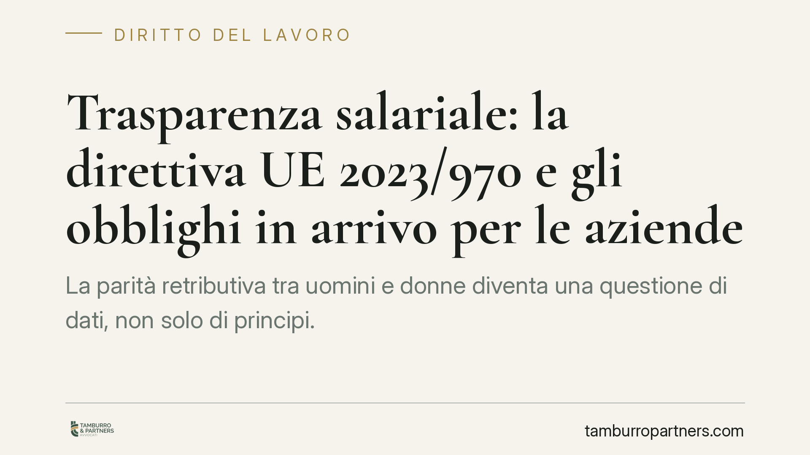

Trasparenza salariale: la direttiva UE 2023/970 e gli obblighi in arrivo per le aziende
La parità retributiva tra uomini e donne diventa una questione di dati, non solo di principi. La direttiva UE 2023/970 impone alle aziende obblighi di trasparenza sulle retribuzioni, con un diritto di informazione per i lavoratori e un reporting modulato per dimensione. Il termine per il recepimento è il 7 giugno 2026: le imprese hanno una finestra limitata per attrezzarsi.

Il quadro: cosa cambia e da quando
La direttiva (UE) 2023/970 del Parlamento europeo e del Consiglio del 10 maggio 2023 rafforza l'applicazione del principio di parità retributiva tra uomini e donne per uno stesso lavoro o per un lavoro di pari valore, attraverso meccanismi di trasparenza e strumenti di tutela.
Gli Stati membri devono recepire la direttiva entro il 7 giugno 2026. Alla data di redazione di questo contributo, il decreto legislativo italiano di attuazione risulta in corso di recepimento: i riferimenti numerici del provvedimento attuativo circolati (tra cui la sigla "D.lgs. 96/2026") vanno considerati non ancora verificabili e non costituiscono dato certo. Per questa ragione facciamo riferimento diretto alla fonte primaria europea.
Sul piano interno, il principio ha già solide radici: l'art. 37 della Costituzione riconosce alla lavoratrice gli stessi diritti e, a parità di lavoro, la stessa retribuzione spettante al lavoratore. Il Codice delle pari opportunità (D.lgs. 198/2006) disciplina la parità retributiva per lavoro di pari valore; la portata precisa delle singole disposizioni andrà coordinata con il futuro decreto di attuazione, che potrebbe modificarne il perimetro.
La nozione di "lavoro di pari valore"
È il concetto cardine della direttiva. Due mansioni possono essere formalmente diverse ma avere lo stesso valore, e quindi meritare pari retribuzione. La valutazione si fonda su criteri oggettivi e neutri rispetto al genere:
- competenze (conoscenze, qualifiche, esperienza richiesta);
- impegno (fisico e mentale);
- responsabilità (su persone, risorse, decisioni);
- condizioni di lavoro (contesto, rischi, disagi).
La conseguenza pratica è netta: non basta più giustificare un divario retributivo con l'etichetta formale della mansione. Occorre dimostrare che la differenza poggia su fattori misurabili e non discriminatori.
Gli obblighi di reporting per fasce dimensionali
La direttiva modula gli obblighi di comunicazione del divario retributivo in base al numero di dipendenti:
- datori con almeno 250 dipendenti: reporting annuale;
- datori con 150-249 dipendenti: reporting con cadenza triennale;
- datori con 100-149 dipendenti: reporting triennale (con avvio differito rispetto alle fasce superiori).
Al di sotto delle 100 unità la comunicazione non è obbligatoria a livello europeo, ma gli Stati possono introdurre obblighi ulteriori.
Il dato più delicato è la soglia del 5%: quando dal reporting emerge un divario retributivo medio non giustificato da fattori oggettivi pari o superiore al 5% in una categoria di lavoratori, e il datore non vi pone rimedio entro un termine, scatta la valutazione retributiva congiunta, condotta in cooperazione con le rappresentanze dei lavoratori.
Il diritto all'informazione e l'onere della prova
Ogni lavoratore avrà diritto a ottenere informazioni sul proprio livello retributivo e sui livelli medi, disaggregati per sesso, relativi alle categorie di lavoratori che svolgono lo stesso lavoro o un lavoro di pari valore.
Cambia inoltre l'equilibrio processuale. In caso di contenzioso, l'onere della prova si sposta sul datore di lavoro: sarà l'impresa a dover dimostrare l'assenza di discriminazione, non il lavoratore a doverla provare. È una modifica sostanziale della dinamica difensiva.
Implicazioni pratiche
Per le aziende non si tratta di un adempimento formale. Un sistema retributivo poco tracciabile diventa un rischio di contenzioso e, potenzialmente, di sanzione. La trasparenza impone di rendere leggibili e difendibili le scelte salariali già oggi in essere.
Cosa fare in concreto
- Mappate l'organico per fasce dimensionali e verificate in quale scadenza di reporting ricadrà l'impresa.
- Costruite un sistema di classificazione delle mansioni basato sui quattro criteri oggettivi (competenze, impegno, responsabilità, condizioni di lavoro).
- Analizzate i divari retributivi interni per categoria e sesso, individuando gli scostamenti che si avvicinano o superano la soglia del 5%.
- Documentate per iscritto i criteri che giustificano le differenze salariali (anzianità, produttività, qualifiche): è la base su cui si regge la difesa.
- Coinvolgete per tempo le rappresentanze sindacali, in vista dell'eventuale valutazione retributiva congiunta.
Un'ultima osservazione. Con l'inversione dell'onere della prova, la documentazione dei criteri retributivi cessa di essere un adempimento burocratico e diventa lo strumento difensivo principale nell'eventuale contenzioso. Ciò che non è tracciato e motivato, in giudizio, rischia di pesare contro l'azienda.
---
*Contributo informativo a cura di Tamburro & Partners - Avv. Giuseppe Tamburro. Non costituisce parere legale.*
Ogni storia di lavoro ha i suoi tempi.
Se gestisci HR e vuoi un confronto su contenzioso, ispezioni o licenziamenti, scrivi allo studio. Ti rispondiamo entro un giorno lavorativo.